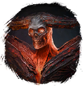

Открыть в интерактивной вики →
| Уровень | норм. 115 / тяжел. 130 |
|---|---|
| Сила (PvE) | 5487 |
| Аспект | Yantrei |
| Здоровье | норм. 5500 / тяжел. 11 000 |
| Мана | норм. 8000 / тяжел. 10 000 |
| Выносливость | норм. 8000 / тяжел. 10 000 |
Локация
- Вулкан
- Вулкан Хвара
Команда

Дроп


Умения
- Дезориентация — болезненный удар, таран, обычная атака
 Огненный Шар Огненный Шар
Огненный Шар Огненный Шар- Воля к бою — боевой клич, паника
Иммунитеты / особые умения
Устойчивость к обездвиживанию